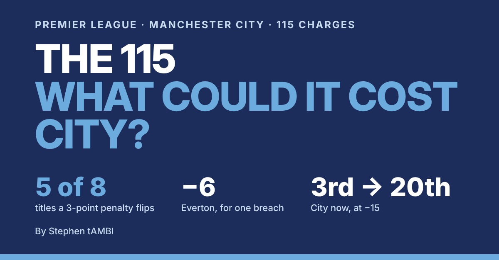
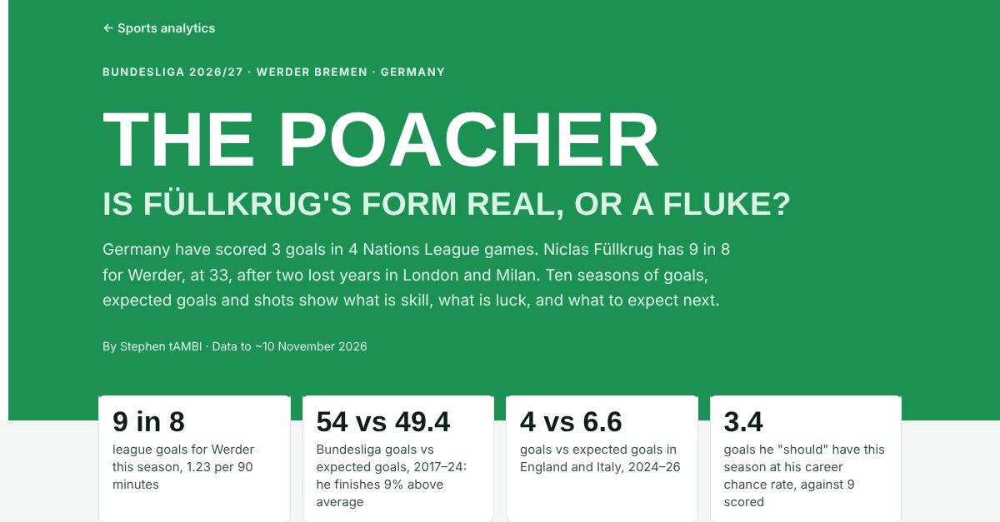
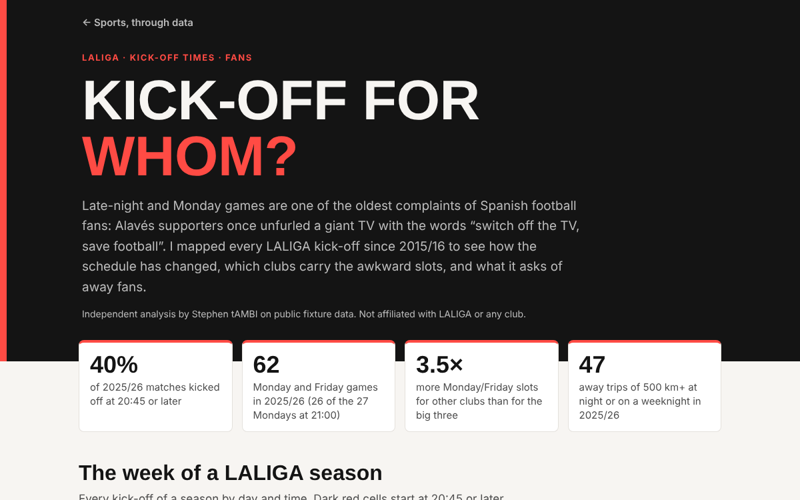
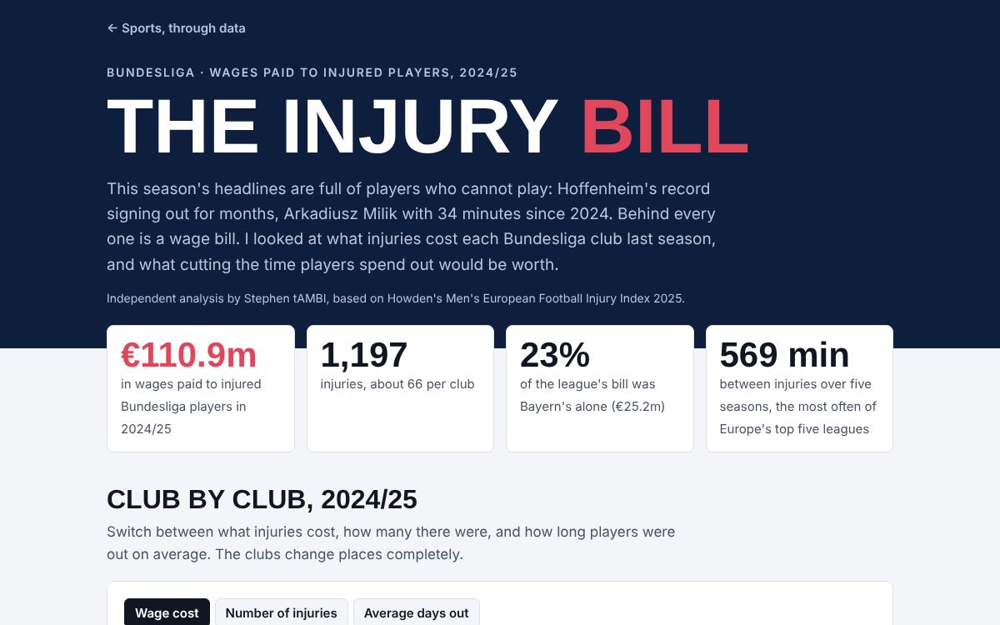
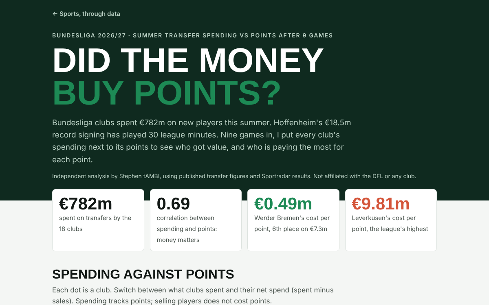
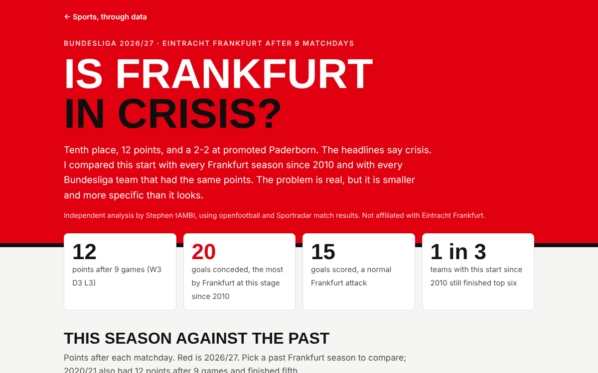
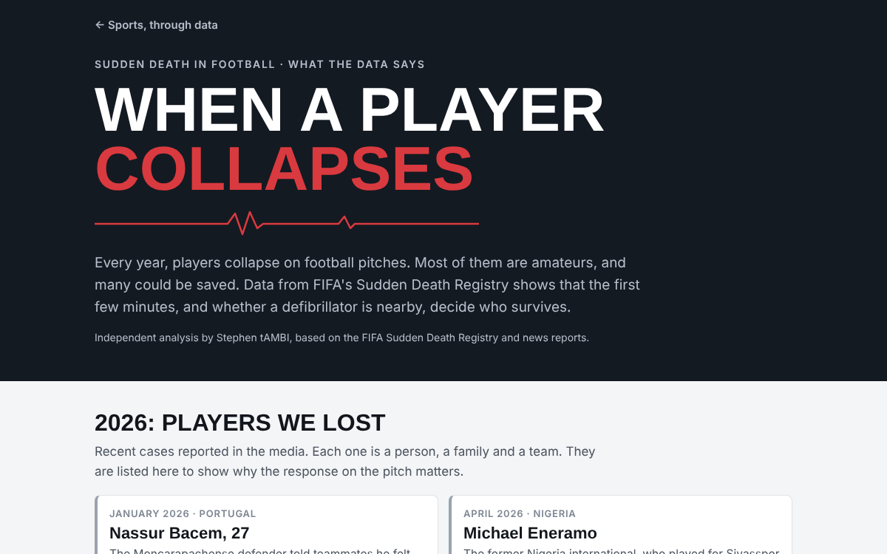
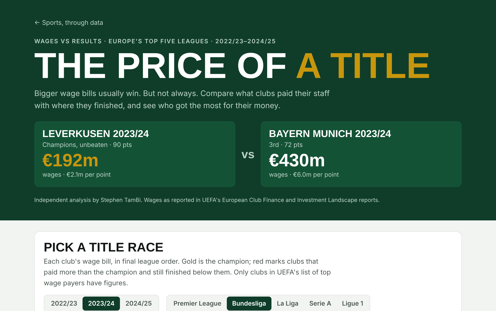
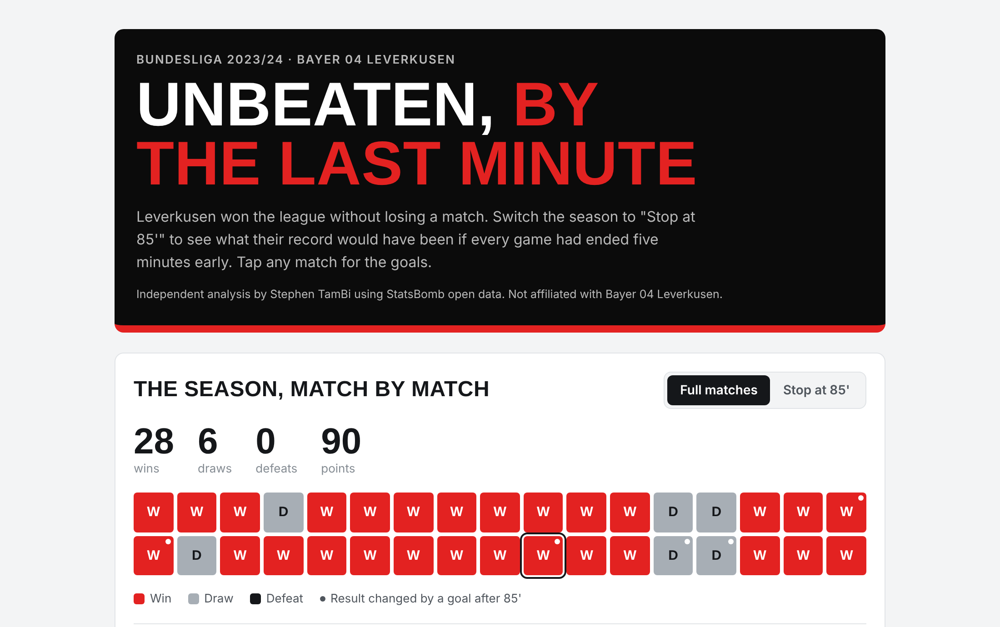
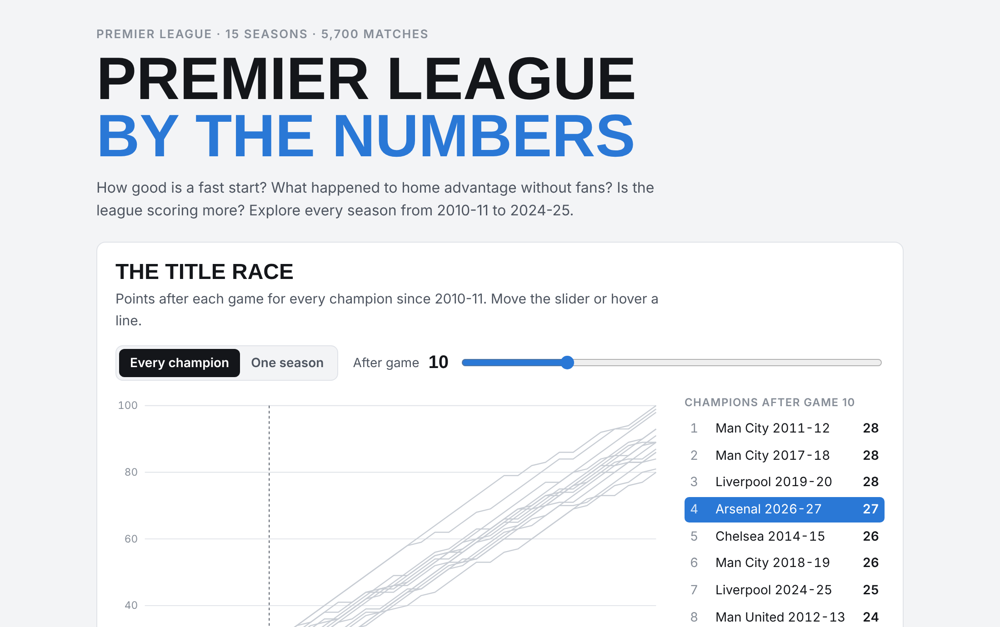

Football
Interactive

The 115
City were reportedly found guilty on 114 of 115 charges. 5 of their 8 titles were won by margins a 3-point penalty would erase, and Everton lost 6 points for one breach. Slide a deduction through this season's table.
Open →
Where did Germany's talent go?
Germany had 26 future stars aged 21 or under in 2017/18 and 7 four years later, while France had 24. World Cups since 1990, the missing strikers and full-backs, and six fixes with targets to track.
Open →
The Poacher
Füllkrug has 9 goals in 8 games for Werder, the best rate of his career. In Germany he has scored 54 from 49.4 expected goals; abroad he got fewer chances and scored 1 from 4.4. Shot map, German strikers and a match calculator.
Open →
Kick-off for whom?
4,270 LALIGA kick-offs since 2015/16. 40% now start at 20:45 or later, and clubs outside the big three get Monday and Friday slots 3.5 times as often. Pick a club to see its away fans' toughest trips.
Open →
The injury bill
Bundesliga clubs paid €110.9m in wages to injured players in 2024/25, Bayern alone 23%. Hoffenheim's injuries lasted 31 days on average. A calculator shows what shorter absences would save each club.
Open →
Did the money buy points?
Bundesliga clubs spent €782m this summer. Werder are 6th on €7.3m, €0.49m per point, while Leverkusen pay €9.81m per point. Spending tracks points; selling does not cost them.
Open →
Is Frankfurt in crisis?
12 points after 9 games and 20 goals conceded, the most by any Frankfurt team at this stage since 2010. History says this start ends in mid-table, and three fixes could get them back to Europe.
Open →
When a player collapses
617 players collapsed on football pitches in five years, most of them amateurs. With trained staff and a defibrillator, 85% survived; with bystanders alone, 35%. See why the first minutes decide who lives.
Open →
The price of a title
Leverkusen won the Bundesliga on €192m in wages while Bayern paid €430m and finished third. Compare wage bills and results across Europe's top five leagues, and see who got the most for their money.
Open →
Unbeaten, by the last minute
Leverkusen went through 2023/24 without a defeat, but 13 of their 89 goals came after the 85th minute. Stop every match at 85 minutes and watch the record disappear.
Open →
Premier League by the numbers
Compare every champion's start since 2010-11, replay any title race game by game, and see what happened to home advantage when the fans were gone.
Open →